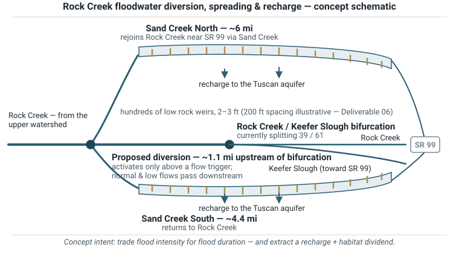

Turn a flooding problem into roughly 6,000 acre-feet a year of recharge
Rock Creek's flood peaks now pour into Keefer Slough and against State Route 99. This concept diverts part of those peaks a mile upstream and spreads them across ten miles of floodplain through hundreds of low rock weirs — recharging the Vina Subbasin aquifer, flattening the flood wave, and reactivating habitat. The full case, with every number cited to a published study, is in the July 2026 Concept Evaluation Report.
Keefer Slough now takes 61% of Rock Creek's flood water — and SR 99 pays the price
Four published datasets disagree about the size of Rock Creek's floods — by roughly 43% at the 100-year event. What is not in dispute: the bifurcation has shifted. Sediment and vegetation have cut Rock Creek's share of the split from 56% to 39%, sending the majority of every major flood down Keefer Slough — where the State's current 2D model shows 3.5× more water at Garner Lane than the FEMA maps in force today assume. The maps are expected to catch up in 2027.

Full analysis: Report §3 (PDF) · Annex, Deliverable 02 — Discharge Dataset Comparison
Divert flood peaks a mile upstream — spread them across ten miles of waiting floodplain
A controlled intake ~1.1 miles above the bifurcation takes water only during high flows. Two overland corridors carry it across the plain through hundreds of low rock weirs that slow it, spread it, pond it, and hold it against the ground long enough to soak in. What doesn't soak in returns to Rock Creek as a longer, lower, later flood wave. No dams and no reservoir: every structure sits far below the 6-foot state dam-safety threshold, and a displaced weir affects one reach — not a valley.

Full description and reach drawings: Report §4 (PDF) · Annex, Deliverables 01 & 06
Recharge where the County's own plan says it matters most
The Board-adopted Butte County Recharge Action Plan (February 2024) calls for ~20,000 acre-feet a year of new recharge, prioritizes the Vina Subbasin, and lists "spreading and slowing flood flows" first among its strategies. The County's 2026 Component 5 pilot program found some of the subbasin's most favorable infiltration at the Keefer Slough–Rock Creek confluence. This concept's central case would deliver roughly a quarter to a third of the countywide goal from a single project — alongside, not instead of, the County's own basin projects on the same corridor.

Water balance and the §1242.1 diversion-day analysis: Report §7 (PDF) · Annex, Deliverable 07 §2
$77 per acre-foot to local beneficiaries — grants plausibly carry ~75%
AGUBC and partners contribute ~$8 M to a ~$30 M project, and in return receive ~6,000 AF/yr of new recharge — about $77 per acre-foot, well below the $300–2,000/AF California surface-water market. Same water, three honest lenses: $77/AF to the local beneficiaries, $212/AF to the grant funders, $308/AF counting every dollar. And nothing recurs: a ~$3 M endowment inside the capital covers the ~$120 K/yr of operations, so there is no annual assessment.

Cost build-up, funding stack, and sensitivities: Report §8 (PDF) · Annex, Deliverable 07
One conversation decides this project: the owner of 87% of the corridor
The corridor is understood to involve just four landowners [VERIFY — the project's first work item]. One holds ~9 of the 10.4 miles under an existing NRCS conservation easement — a single go/no-go partner, on land already committed to conservation. The roadmap spends its first year on inexpensive verification — county records, a geophysical survey of the corridors, four landowner conversations — and gates every major commitment on that answer at roughly month twelve. A yes opens both corridors; a no ends the concept at a sunk cost measured in the low hundreds of thousands, not millions.

Roadmap, responsible parties, and the first-12-months action list: Report §9 (PDF) · Annex, Deliverable 04
Every number traces to a published study — or is flagged
Three rules govern the analysis behind this site. Every value is cited to a source or marked [VERIFY] — nothing is filled in silently. All quantities are order-of-magnitude screening values, not engineering. And nothing is transferred from the dam-based precedents where the physics differ. The 36-page Concept Evaluation Report is the document of record; the technical annex carries the eight underlying deliverables and the full 50-parameter cited reference table.
Source studies
- Nord Feasibility Study — Wood Rodgers for Butte County / DWR, Aug 2023. Watershed hydrology, geomorphology, environmental constraints, unit costs. Dam-based results not transferred.
- Rock Creek Reclamation District Infiltration Feasibility Study — Wood Rodgers / GeoSystems Analysis, Oct 2023. Same-area infiltration rates, subsurface screening method, permitting findings. PDF
- Singer Creek Preserve Habitat Development Plan, Vol. 1 — Restoration Resources for BCAG, 2008–09. Land control, stewardship-endowment model, restoration permitting pathway.
- Caltrans District 3 Hydraulic Branch memorandum — Lee, Nov 2025. Current-conditions 2D results: the 3.52× Garner Lane finding and the 39/61 bifurcation split. PDF
- Geosyntec Component 5 Recharge Investigation — for Butte County WRC, June 2026. Confluence infiltration finding; Water Code §1242.1 FloodMAR pathway; corridor basin projects N4/N5/N6; Recharge Action Plan context.
- Vina Subbasin GSP (2021) and WY 2025 Annual Report — sustainable-yield context and the ~8,000 AF/yr storage trend.
Full linked citations, including the Nord source transcriptions, are on the annex Overview tab.